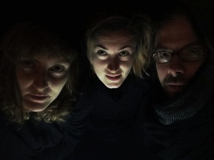
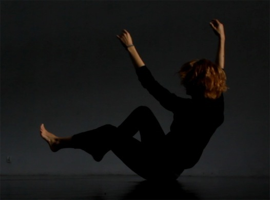

copyright for the website: Jan Lubicz Przyluski - All Rights Reserved

NIE-MÓJ RUCH
(Fragment 1: BODY KNOWS)
Work in progress
2017
Performerka spotyka na swojej drodze kogoś, kto ją widzi. Widzi i potrafi zwizualizować jej próby wyjścia
z zamkniętych form ruchu. Doświadczyć nowych impulsów we własnym ciele. Czy one zawsze w nim były?
Wizualizowane próby ruchowe stają się materiałem do edycji. Konfrontację ciała z obrazem ciała podsyca jeszcze
quasi-wywiad z performerką. Daje możliwość gry indentyfikacji pomiędzy moim ruchem a nie-moim ruchem.
Praca z video daje perfomance możliwość skonfrontowania się z poznaniem swojego ruchu i nieswojego.
Zmiana kontekstu, przesunięcie jednej formy ruchu doskonałego w inną, wnosi coś nowego, ale też czogoś pozbawia.
To wydarzenie ma swoją własną dramaturgie, którą możemy wykorzystać.
Performance Agaty Wiedro, mistrzyni tanców towarzyskich, która działa poza ustalonymi kontekstami, zadaje
pytania o formę i autentyczność. Jak oduczyć się tego, co stanowi naszą siłę? (I czy w ogóle to ma sens?) Jak zepsuć
ruch, który się tak głęboko uwewnętrznia? Jak to się dzieje, że nawyki wrastają w nas jak chwasty, które próbujemy
wyplewić? Jak skonfrontowac się z formami, które posiedliśmy, ale które też posiadły nas?
Ruch i choreografia: Agata Wiedro
Zdjęcia video: Partycja Stefanek
Realizacja: Patrycja Stefanek, Jan Lubicz Przyłuski
Tekst: Jan Lubicz Przyłuski
Muzyka: Rashad Becker


Agata Wiedro, kadr z filmu, (zdjęcia: Partycja Stefanek)
Patrycja Stefanek, Agata Wiedro, Jan Lubicz Przyłuski
NIE-MÓJ RUCH
2017
(Fragment 1: BODY KNOWS)
Work in progress - PROJEKT PERFORMATYWNO-TANECZNY